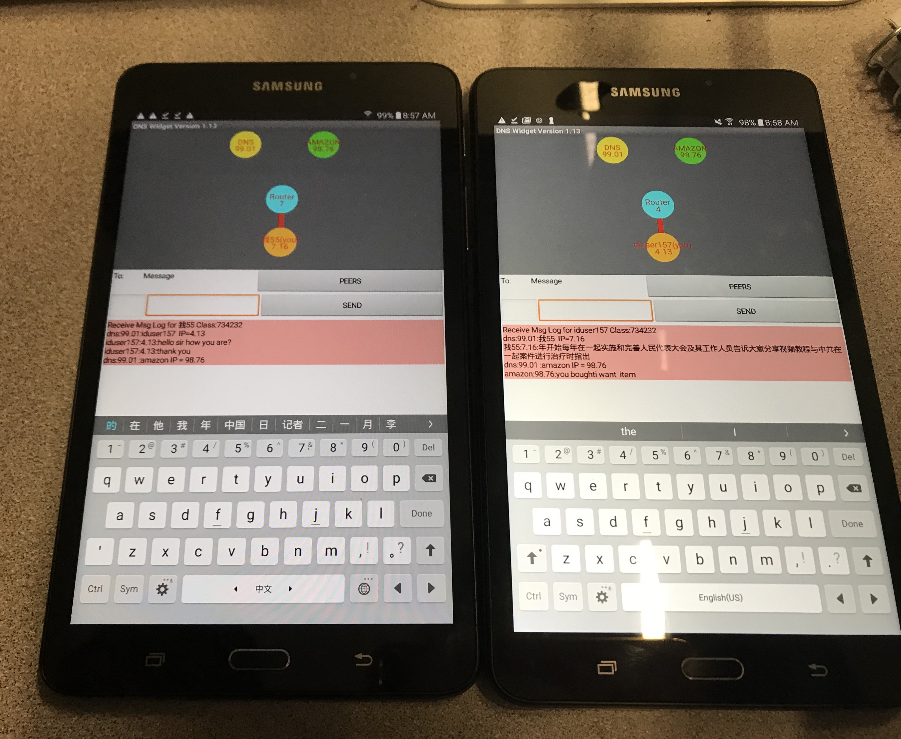
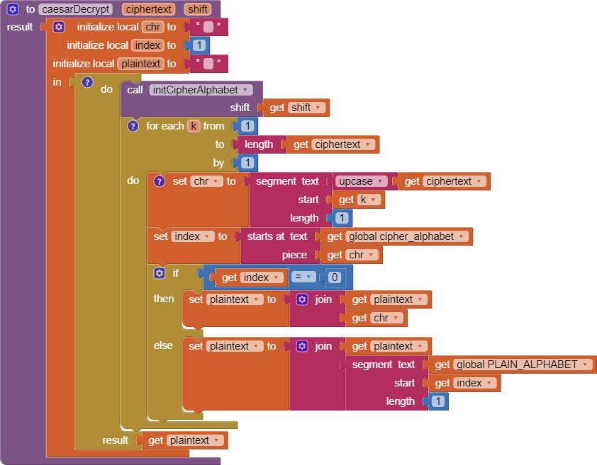

6.2 - Internet: Basic Concepts and Terminology
1. What is bandwidth? What do you think affects the differences in bandwidth globally as well as in different locations in the U.S.?
Bandwidth is the rate at which data are downloaded or uploaded in a network. I think the economy or wealth of a country, state, or city affects the differences in bandwidth globally and in different parts of the U.S. as well as the difference in income an individual make. Some countries my not be able to afford faster internet than other countries and some households cannot afford better internet or any internet access at all than other households.
2. What is latency? How does it differ from bandwidth? Why is it a useful measure?
Latency is a measure of the trime it takes a piece of data to reach its destination. This is different from bandwidth as latency focuses on the delay it takes to reach a destination like a website, domain, or individual, while bandwidth focuses on how fast one can download or upload a file/data. Latency is a useful measure as it can determine if the quality of a network or help diagnose issues dealing with slow internet responsiveness.
3. What is the digital divide? What are some ways to reduce the effects of the digital divide?
The digital divide is the divide between people with internet access and those who do not have access to the internet. Some ways to reduce the effects of the digital divide is to provide more variety of Internet Service Providers, make internet subscriptions cheaper, give benefits to low-income households providing them with access to the internet, etc.
6.3 - Internet Architecture and Packet Switching
1. (POGIL Activity 1) How does the geographical distance between the source and destination hosts on a network affect latency?
Geographical distance between the sources and destination hosts on a network affect latency due to distance a signal needs to travel, for example if there is a long distance to travel there will be more latency as the time it takes for that message or data to be received will take longer.
2. What are the benefits of packet switching?
Packet switching is a decentralized network with mulktiple paths between points A and B. It provides robustness in the network design.
3. (POGIL Activity 2) Missing Packets. What should happen if a packet goes missing? Who (which layer) would handle this? What action would they have to take? And what additional information would be needed in the packet in order to handle it?
The transport layer would handle the missing packet by requesting another one, or skipping the packet if there is no header.
4. (POGIL Activity 2) Security/Privacy. As the packets are being transmitted through the network, can people other than the sender and receiver read the messages? What methods can we use to protect the message?
Other people can read it and steal that information. We can use encryption to protect the messages even if people on the internet steal the information, they won’t be able to read it.
6.4 - I.P. Addresses and Domain Names
1. What is DNS and how does it work? How does DNS help you connect to a web server like Amazon?
DNS is short for Domain Name Service, it functions by using the domain name of something and finding the ip address that correspond to that domain name to allow communication between the client and desired domain. It helps us connect to a web server like Amazon by translating the domain name into ip addresses, allowing the user to reach Amazon.
2. Include a screenshot of your message log in the DNS Simulation app in Activity 1.

6.5 - Caeser Cipher App
1. Post a screenshot of your code for the caesarDecrypt function.
i
2. Explain the difference between a function and a procedure. Give an example of a function.
A function is found within a procedure that carries out a set of instruction that is meant to result in a specific goal. While a procedure only carries out a set of instructions based off what it is programmed to do. An example of a function is a drawSquare function that creates a square, by having a pen draw four sides while turning 90 degrees 1 time each side.
3. Explain the difference between global and local variables. Why are local variables easier to debug than global variables?
Global variables work with all code, while local variable only works for a specific code or function. Locol variables are easier to debug than global variables because they are easy to find as they are within one function or code, rather having to look through the entier program.
6.6 - Cryptography Basics
1. Explain briefly how the following substitution ciphers can be broken: Caesar cipher, Simple substitution cipher, Vigenere cipher.
The Caesar cipher can be broken by shifting the letters of the alphabet from an increment of one to twenty-five. Simple substitution ciphers can be broken by using frequency analysis to determine where the shift is occuring. Vigenere cipher can be broken through analyzing all the repeating letters that are grouped, how far appart each other are.
2. Define symmetric encryption.
A symmetric encryption uses the same key for both encrption and decryption.
6.7 - Cryptography: Securing The Internet
1. Explain in your own words how public key encryption is not symmetric.
Public key encryption is not symmetric as it uses two parts of the same key, a public key and a private key the individual has. There is more than one key therefore it is not symmetric.
2. Cryptography relies on open standards - a protocol or standard that is publicly available. Why are open standards necessary?
Open standards are necessary as it allows users to explore the vast internet, without it access with the internet would be limited, for example HTTP allows the user to connect with a website or domain.
6.8 - Debugging Caeser Cipher
1. For each of the 5 bugs in the Caesar Cipher app, explain what the bug was, how to fix it, and the type of error (semantic or syntax). If you wish, you can take a picture of your corrected blocks and then annotate it to identify and describe the bugs you fixed.
First error: The button Encrypt should set the text to TextBoxCiphertext, not TextBoxPlaintext. This is a semantic error
Second Error: Within the caesarDecrypt function, the forloop is supposed to go to the length of the cipher text not the integer of 5. This is a semantic error
Third Error: Found in caesarEncrypt the result should be cipher text instead of the plain_alphabet variable. This is a semantic error.
Fourth Error: Found in caesarEncrypt the forloop is supposed to be set to Plaintext for the 'to' section. This is a syntax error.
Fifth Error: Found in caesarDecrypt, the result is supposed to result with plaintext instead of ciphertext. This is a semantic error.
6.9 - Impacts of CS: Cryptography and the Government
1. What does it mean to say that the government would like to have a back door to the encrypted data on a mobile phone?
In otherwords, the government would like to have an easy access to the security of data within a mobile phone by bypassing it through the "backdoor".
2. What are the main legal and ethical reasons for letting the government have a back door?
The main legal and ethical reasons for letting the government have a backdoor is national security and safety against terrorism or other form of mass harm to the public.
3. What are the main legal and ethical reasons against letting the government have a back door?
The main legal and ethical reasons against letting the governemnt have a back door is the infringement of the individual's privacy which can lead to government exploitation of such data. The government can use peoples data to arrest them for issues like drug possession, etc.
4. Do you think Apple should abide by the Court’s decision and unlock the mobile phone in the San Bernardino case? Explain.
I think in situations like this the government should have access to the mobile phone in the San Bernardino case. I think the government should have access to an iPhone's data only in situations of mass shootings, terrorism, or any large scale incident that threatens the saftey of the general public or the nation. The governmentment should have a one time key of some sort to access only the device desired.